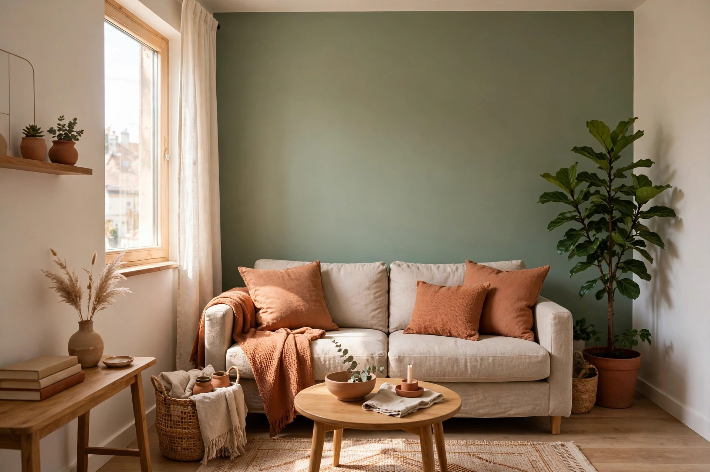

Small Living Room
Small Living Room Makeover for Under $100: Weekend Plan
Intro
A living room makeover does not need a contractor or a big budget. With $100 and one weekend, you can declutter, rearrange, refresh one wall and swap the soft furnishings — and the room will look like a different place on Monday morning. The trick is a plan: Saturday for the hard work, Sunday for the finishing touches.
This guide is a 2-day plan with 12 steps. Each step has a price, and the whole weekend stays under $100. Most steps are free; the money goes on paint, cushion covers and one or two small swaps.

1. Saturday morning: empty the room — $0
Take everything small out of the room — cushions, throws, books, ornaments, cables. Put it all on the dining table. An empty room shows you what you actually have, and it makes the next steps ten times easier. This takes about 30 minutes.
2. Declutter in three boxes — $0
Three boxes: keep, donate, toss. Be honest — if you have not used it in six months, it goes. Small rooms suffer most from clutter, and this step alone can make the room feel bigger. One box out the door is worth $50 of new decor.
3. Move the sofa first — $0
Try the sofa on the longest wall, or floating it 15 cm from the wall with a console behind it. The sofa is the biggest piece, so its position decides everything else. Move it, sit down, and check the view from the door before you commit.
4. Raise the curtains — $0
Move the curtain rod up to 10 cm below the ceiling and 10–15 cm wider than the window on each side. Higher, wider curtains make the window — and the room — look bigger. This costs nothing if you reuse the same rod and curtains.
5. Clean the windows and the mirror — $0
Wash the windows inside and out, and clean any mirror until it shines. Light is free, and dirty glass blocks more of it than you think. A clean window can make a dark room feel a whole shade brighter.
6. One accent wall, one litre of paint — $18–$25
Saturday afternoon: paint the wall behind the sofa a soft colour — sage, dusty blue or warm terracotta. One litre covers one wall. Tape the edges, use two thin coats, and let it dry overnight. This is the single biggest visual change of the weekend.
7. Swap the cushion covers — $12–$18
New cushion covers in two colours that match the accent wall — for example terracotta and cream. Covers are cheaper than new cushions, and they change the whole sofa. Keep the old covers in a bag in case you want them back.
8. Add one throw and fold it properly — $12–$15
A throw in a warm neutral, folded over one arm of the sofa, not draped everywhere. One throw is enough — two throws look messy in a small room. A chunky knit or a linen throw both work.
9. Sunday morning: rearrange the shelves — $0
Put back only what you love. Books in groups of three, one plant per shelf, and one empty shelf if you can manage it. Empty space is part of the design — a shelf that is 20% empty looks calm, a shelf that is full looks crowded.
10. Hide the cables — $5–$8
A cable box or a few adhesive cable clips under the TV stand. Visible cables make a room look unfinished, and hiding them takes 15 minutes. This small step makes the whole room feel more expensive.
11. One plant, one lamp, one picture — $15–$25
Sunday afternoon: one tall plant in a corner ($8–$12), one warm lamp on a side table if you do not have one ($7–$10), and one framed picture or print on the accent wall ($5). Three things, one each — do not buy more, or the room tips back into clutter.
12. The 10-minute Sunday reset — $0
Finish by setting a weekly habit: every Sunday, 10 minutes — fluff the cushions, fold the throw, clear one surface, take out one thing you do not need. A makeover only lasts if you maintain it, and 10 minutes a week is all it takes.
Conclusion
The weekend works because the order matters: declutter first, move furniture second, paint third, and buy last. If you buy first, you decorate around clutter. Under $100, the room gets a new wall, new cushions, a throw, a plant and clean light — and the biggest change, the declutter, cost nothing at all.
Budget recap
- Paint (1 litre): ~$20
- Cushion covers (2): ~$15
- Throw: ~$13
- Plant + lamp + picture: ~$22
- Cable clips: ~$6
- **Total: ~$76 — $24 left over for a pizza to celebrate.**
Pinterest pin titles (3 fresh pins, same article, different designs)
- ""Small Living Room Makeover for Under $100 — Weekend Plan""
- ""Remake Your Small Living Room in One Weekend — $76""
- ""12 Steps, 2 Days, Under $100: Small Living Room Makeover""